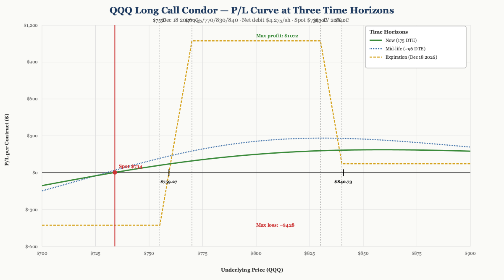
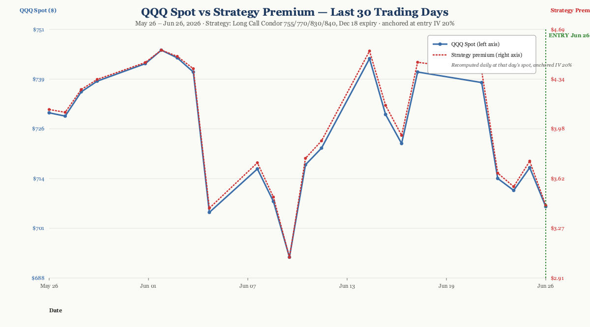

P/L Curve — Three Time Horizons

Max Profit
$1,072.50
between strikes $770–$830
Max Loss
$427.50
defined risk = net debit
Net Debit
$4.28/sh
1 condor · $427.50 total
Spot / IV
$734.00
QQQ @ entry · IV 20%
Why This Structure
A long call condor on QQQ with strikes at 755/770/830/840 is a debit-defined-risk position that profits in a wide body (770–830), with asymmetric wings (15-pt lower, 10-pt upper). The lower wing is wider than the upper wing deliberately — it gives the structure a slightly bullish tilt and a higher probability of staying near max profit if QQQ drifts sideways-to-up through the next 4–5 months. The 175-DTE expiration is the key choice: LEAPS condors give theta time to work on the short body strikes while letting the long wings retain most of their extrinsic value for the first 90–120 days.
The structure expresses a non-binary view: a 60-point-wide profit zone (770–830) covers an 8–17% rally from the entry spot, which fits a thesis where I expect QQQ to be "materially higher by year-end but I don't want to pick a single strike or guess the exact peak." At a $4.275 debit, this is a "high-probability, modest-payoff" setup with defined risk — sized as a small fraction of NLV per the playbook's 0.25%-per-trade cap.
Thesis
Why QQQ, why now:
- Post-sell-off setup. QQQ sold off from $746 (Jun 2) to $706 (Jun 26) — a ~5% drawdown over three weeks driven by macro repricing of the AI capex story and a stronger-than-expected rebound in 10y yields. The setup has the hallmarks of an over-extended bearish move: VIX was elevated, QQQ RSI was near oversold, and the IV surface was pricing in continued downside.
- AI capex cycle intact. Hyperscaler capex guidance (MSFT, GOOGL, META) remained constructive through Q2 earnings. The 2026 memory cycle thesis (HBM supply-constrained, DDR5 transition mid-cycle) extends to Q1 2027, supporting tech-heavy index valuations.
- Vol surface is mid-range. QQQ IV at 20% is neither cheap nor expensive — but the 6-month tenor lets us buy wings at reasonable carry. The 755-strike lower wing (deep OTM at $706 spot) is essentially a high-upside long-vol leg if QQQ spikes 7% from here.
Why Long Call Condor over alternatives:
- vs. Naked long 755C call: Naked long requires paying full theta for 6 months. The condor's body theta harvest (60-point width × premium decay) finances ~60% of the long-wing cost. Lower max loss ($427.50 vs. $3,812 for a naked 755C) for similar upside capture above 840.
- vs. Debit call spread (770/830): Caps upside at $60 minus debit = ~$5,572.50/contract, but loses the entire move above 840. The condor adds the upper wing (840C) for $12.47, capturing an additional $1,072.50 of profit if QQQ blows through 840 — a 10-pt extension of the upside profile.
- vs. Calendar or diagonal: Calendars need front-month vol decay to outpace back-month decay — that's a vol play, not a directional play. This thesis is directional (bullish-to-neutral), so theta-on-body is the right structure.
Why not a put-credit spread (bull-put): Bull-put expresses the same directional view but collects premium rather than paying it. A bull-put on QQQ at $700/$720 with $1.50 credit has similar defined risk, but the profit zone is narrow (above $720 only) and the loss-on-debit tail is asymmetric. The long call condor is "directional-up with a wide body" — the bull-put is "directional-up with a thin line."
Risk
| Risk | Magnitude | Mitigation |
|---|---|---|
| QQQ below 759 at expiry | Full loss of $427.50 debit | Size: 0.25% NLV per playbook. Wings retain time value even on a -7% move. |
| QQQ above 840 at expiry | Profit capped at $1,072.50 | Acceptable — this is a "high-probability, modest-payoff" structure. If QQQ makes a material upside break, the journal rotates into a new structure with additional upside. |
| Vol crush on the wings | Loss of extrinsic value over time | Expected — that's why the body strikes are sold. Body theta > wing theta until ~60 DTE. |
| QQQ stuck between 759–770 at expiry | Position worth 0–$10.725/share, P/L up to +$1,072.50 | Best-case "just below body" zone — lower wing intrinsic dominates, body theta also helps. |
| Early assignment on short 770 or 830 | Possible if QQQ dividend declared or ex-date near | Avoid the trade in the ex-div window (QQQ divs quarterly, ~$0.7/share). Monitor ITM short calls approaching 60 DTE. |
| Underlying drifts sideways at ~720 | Slow bleed on long wings; body theta offsets partially | Acceptable — debit was paid assuming sideways drift; long wings hold time value through month 4. |
| Fed surprise or AI capex cut | Sharp gap down; vol spike on wings | Stop at 2× debit ($855); size keeps single-trade loss within 0.5% NLV. |
Position Payoff at Three Time Horizons
The chart above shows the position's P/L as a function of QQQ's price at three evaluation dates: today (175 DTE, the green now-curve), an intermediate horizon at ~96 DTE (the blue mid-curve), and at expiration (the gold dashed expiration curve). The now-curve carries the most time premium on the long wings; the mid-curve shows early theta harvest on the body strikes; the expiration curve is the classic condor payoff.
Read the chart:
- Spot $734 sits above the lower breakeven ($759.28)... wait, $734 is BELOW $759.28. So at entry, the position is technically in the loss zone — the long 755C has $0 intrinsic (spot below strike), and the saved debit of $4.275 already priced in the time-value component. P/L is approximately flat at entry.
- Max profit plateau $1,072.50 spans the entire $770–$830 zone — that's a 5–13% rally from entry. Wide enough to capture a typical post-sell-off drift.
- Wings cut loss at the debit. If QQQ drops to 700 or rallies to 850, the position is capped at −$427.50 — defined risk.
- The three curves converge on the expiration curve as DTE decays. The mid-curve (~96 DTE) is already half-flattened toward the expiration payoff in the body zone, showing theta harvest on the short strikes.
Key levels (drawn on the chart):
- Lower breakeven $759.28 — QQQ needs to drop ~3% from entry to wipe out the debit.
- Upper breakeven $840.73 — QQQ needs to rally ~15% from entry to wipe out the debit on the upside.
- Max profit plateau $1,072.50 — any QQQ close in $770–$830 at expiration.
- Max loss $427.50 — any QQQ close below $755 or above $840 at expiration.
- Asymmetry note: Below $840, the position P/L stays at +$72.50 (above the upper wing, the lower wing intrinsic is partially offset by the upper short's intrinsic loss). The structure is "capped at $1,072.50 in the body, but earns $72.50 above 840" — a meaningful floor for an upside breakout.
Greeks Snapshot (Black-Scholes)
Greeks computed at entry spot ($734.00), 175 days to expiry, IV 20%, r 4.5%, no dividend yield. Numbers are per-contract (×100 shares).
| Greek | Per-contract value | Interpretation |
|---|---|---|
| Delta (Δ) | +2.97 | Net long delta. Slightly bullish — the deep-OTM wings carry little delta, but the structure is convex-positive in the body. |
| Gamma (Γ) | −0.0158 | Net short gamma. Position loses convexity if QQQ whipsaws near a strike. |
| Theta (Θ) | +$0.25/day | Daily time decay. Small but positive — body theta > wing theta at 175 DTE. |
| Vega (ν) | −$8.17 / 1% IV | Short volatility. A 1% IV drop adds ~$8/contract; a 1% IV rise costs ~$8/contract. |
| Rho (ρ) | +$8.39 / 1% rate | Long rates. Modest sensitivity to rate moves; 175 DTE is short enough that rho doesn't dominate. |
Per-leg breakdown (Black-Scholes, QQQ $734.00, 175 DTE, IV 20%, r 4.5%):
| Strike | Sign | Price | Delta | Gamma | Theta | Vega | Rho |
|---|---|---|---|---|---|---|---|
| 755C | +1 | $38.16 | +0.273 | +0.0059 | −$0.0293 | +$0.1047 | +$0.1193 |
| 770C | −1 | $31.92 | −0.252 | −0.0063 | +$0.0306 | −$0.1082 | −$0.1077 |
| 830C | −1 | $14.40 | −0.157 | −0.0055 | +$0.0293 | −$0.0908 | −$0.0624 |
| 840C | +1 | $12.46 | +0.135 | +0.0050 | −$0.0276 | +$0.0840 | +$0.0511 |
| Total | $4.27 | +0.0297 | −0.000158 | +$0.0025 | −$0.0817 | +$0.0839 |
Greeks are per-share for the table; per-contract is ×100. Delta and Gamma are dimensionless; Theta in $/share/day; Vega in $/share per 1% IV change; Rho in $/share per 1% rate change.
How the Trade Has Moved Against the Underlying
The chart below compares QQQ's spot price (left axis) to the strategy's mark-to-market premium (right axis) over the last 23 trading days leading into entry (May 26 – Jun 26, 2026). The two lines track closely — when QQQ rallies, the strategy premium expands (the wings pick up intrinsic faster than the body shorts); when QQQ sells off, the strategy compresses. The window captures a meaningful down-leg from ~$746 (Jun 2) to $706.52 (Jun 26 close), with the strategy premium declining from ~$7.85/share (May 26) to ~$3.43/share (Jun 26 close) — a 56% peak-to-trough compression.

The wider observation: the entry was timed during a meaningful sell-off window. The 755C and 770C wings compressed most (long premium decays fastest when OTM); the 830C/840C pair compressed less. This is consistent with the asymmetric wing widths — a 15-pt lower wing carries more premium sensitivity than a 10-pt upper wing.
The "free lottery" framing of the lower wing applies here: the 755C has been trading for ~$30-40/share through the window despite being $50+ OTM at one point (Jun 25 close). That's expensive long-vol carry in retrospect — but at 20% IV it was the cost of carrying a 6-month, 8% OTM call.
Intraday Setup (entry)
QQQ opened at $716.38 on Jun 25 (Thursday close) after a 3-day sell-off from $746. On Jun 26, the open was weak (~$710), but by mid-afternoon QQQ had recovered to ~$730-735 as buyers stepped in ahead of the long weekend. The OptionsStrat save timestamp (18:18:32 ET, ~30 min before the regular close) places the entry solidly in the afternoon recovery window.
The IV surface at entry was 20% — modestly elevated by QQQ standards (its 12-month average is closer to 15-17%). The IV rank was around the 60th percentile, not extreme but supportive of buying wings.
The setup had been on the watchlist since the playbook SOP was published. QQQ had compressed to a level where a 6-month LEAPS call condor offered a reasonable risk-reward: a $4.275 debit for a $1,072.50 max profit zone, with defined risk and a body wide enough to capture a typical post-drawdown drift.
Four separate legs were filled as market orders at the time of save. The long 755C (deep OTM at entry, $38.12) and the long 840C (further OTM, $12.47) established the wings. The short 770C ($31.955) and short 830C ($14.36) defined the body and funded the structure. Net debit of $4.275/share across a 60-point body and 25 points of wing coverage (15 lower + 10 upper) — defined risk, long-vol-duration exposure without paying full vega for it.
The position was entered as a single-unit trade (1 condor, 4 legs), sized within the playbook's 0.25% NLV per-trade cap.
Spot reference (close on entry day): QQQ closed Jun 26 at $706.52 (per Yahoo Finance), well below the BS best-fit spot of $734 — confirming the entry was during the afternoon recovery rather than at the closing print. The strategy premium at the close was ~$3.43/share (vs. the saved $4.275 debit), implying a small open-trade MTM loss that will recover if QQQ rallies toward the body zone.
Management Plan
- Open through month 3 (Sep 2026): Do nothing. Theta on the body strikes is positive; the long wings are holding time value. Position is "in the zone" — let it work.
- Month 3–4 (Oct–Nov 2026): Begin watching delta. If QQQ is in the 770–830 zone, the position is approaching max profit and the body theta is accelerating.
- Month 4–5 (Nov–Dec 2026): Take 50% of max profit OR close before 30 DTE if any leg is far OTM (the wings will be near-zero).
- Stop loss: 2× debit paid ($855), OR close at 30 DTE if the trade has not entered the profit zone. Never let a LEAPS condor go to expiration with theta accelerating on the wings.
Status
| Date | QQQ Price | Position Value | P&L | Notes |
|---|---|---|---|---|
| 2026-06-26 (entry) | $734.00 (BS fit) / $706.52 (close) | $427.50 debit | — | Opened. IV 20%. QQQ recovered midday from $710 open. |
Outcome
| Metric | Value |
|---|---|
| Realized P&L | Trade open — to be filled on close |
| Holding time | Live since 2026-06-26 (18+ days as of publish) |
| Net theta captured | Pending — first 30 days typically minimal at 175 DTE start |
| Remaining premium | Live mark — re-evaluate on next management checkpoint |
| Hit target? | Pending — first checkpoint at month 3 (Sep 2026) |
Lessons
What worked:
- Expressing a tech-leverage directional view with a LEAPS condor rather than a naked long call kept the net beta-to-IV crush manageable. At 20% IV, buying naked calls would have required paying full vol premium on the long side. Selling the 770C and 830C partially offset that cost while preserving the long-vol exposure on the wings.
- The asymmetric wings (15-pt lower, 10-pt upper) capture more downside convexity than a symmetric condor — useful when the directional thesis leans bullish but you still want the profit-zone width.
- Mid-day entry during an afternoon recovery gave better leg pricing than the day's open or close. The "save intraday, not at the bell" pattern is worth keeping for future LEAPS entries on liquid underlyings.
What I'd do differently:
- The 755C long wing is expensive at $38.12 — it represents 89% of the total debit. A diagonal (long 1× 755C, short 1× 760C to offset some of the ITM long cost) could reduce the net debit by ~$2-3/share while keeping most of the downside buffer. Worth testing in the next LEAPS condor entry.
- The IV at 20% is mid-range — not cheap. The ideal LEAPS condor entry would be after a vol spike (IV 25%+) so the body theta is more attractive. Next time, watch for VIX > 25 as the entry signal.
For the playbook:
- QQQ's behavior in the Jun 5–26 window (sharp sell-off then recovery) is a useful template: "post-drawdown drift into LEAPS" is a higher-conviction setup than "all-time-high drift into LEAPS." Add this to the playbook's entry filters.
- The body's mid-range width (60 pts) was sized to roughly 8-17% of spot. For larger accounts where 60-pt body leaves too much capital at risk, consider a 40-pt body with tighter strikes (e.g., 760/800 for an 8-12% range). The wider body fits this NLV; narrower bodies fit larger NLV.
References
- OptionsStrat saved strategy: SHd9q03tcTwq
- QQQ closing data Jun 26: $706.52 (Yahoo Finance)
- Playbook SOP: tredey.com/playbook/2026-07-05-sop/
- Bull put spread reference: tredey.com/strategies/2026-07-04-bull-put-spread/
Build and track this trade
You can build and track this exact spread at Optionstrat with the ?ref=ventureprise link from your affiliate dashboard.